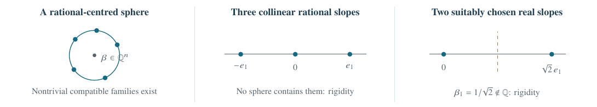
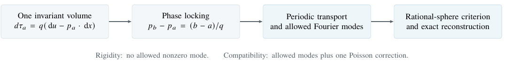

All-dimensional counterexamples disprove unrestricted rigidity. Under a common invariant volume, we obtain an exact rational-sphere rigidity criterion, sharp finite-slope tests, and a complete spectral–Poisson classification.
Geometric Analysis
Downloadable summary PDF: open PDF.
Exact common-volume classification.Theorems 6.1 and 6.6; Proposition 6.3
For smooth solution foliations at the slopes \(a\in S\subset\R^n\), let \(p_a(x,u)\) be the gradient of the leaf through \((x,u)\). Require a single positive probability density \(q\in C^1(\T^n\times\T)\) satisfying \[\partial_{x_i}q+\partial_u(qp_{a,i})=0\quad(a\in S,\ 1\le i\le n), \qquad \int_{\T^n\times\T}q\dd x\dd u=1.\] For \(S\) containing at least two distinct slopes, define \[\mathcal C_{\Q}(S)=\{\beta\in\Q^n:|a-\beta|^2=|b-\beta|^2\text{ for all }a,b\in S\}.\] \[\boxed{\quad S\text{ is a universal common-volume rigidity test} \quad\Longleftrightarrow\quad\mathcal C_{\Q}(S)=\varnothing.\quad}\] Rigidity gives \(q=1\) and \(p_a=a\). Every excluded set is realized within the ordinary all-slope class. The smallest tests use two real slopes or three rational slopes; one slope never suffices. Every sufficient set contains a sufficient subset of at most \(n+2\) slopes, and the bound is sharp.

The fixed Euclidean action and its equation are \[\mathcal A_V[u;\Omega]=\int_\Omega(\tfrac12|\nabla u|^2-V(x,u))\dd x, \qquad \Delta u=-V_u(x,u).\] Ordinary deck invariance preserves the family of leaves, not necessarily each rational leaf. For a smooth periodic \(b\ge0\), nonzero but having a zero, set \(V_b=-b^2/2\). If \(g_E=\sqrt{b^2+2E}\) and \(|e|=1\), every leaf with \(\nabla u=e g_E(u)\) satisfies \[\mathcal A_{V_b}[w]-\mathcal A_{V_b}[u] =\tfrac12\int_\Omega|\nabla w-e g_E(w)|^2\dd x.\] This controls all-dimensional fixed-trace competitors. Rotating profiles give every nonzero slope; the bounded flow of \(y'=b(y)\) in the \(x_1\) direction gives slope zero.
The rational shear \(\theta=\ell u+k\cdot x\) gives \[V_{k,\ell}(x,u)=-\frac{\sin^4(\pi(\ell u+k\cdot x))}{2\ell^2}, \qquad \beta=-k/\ell\in\Q^n.\] It has ordinary minimizing foliations at every slope, rigid foliations at every \(a\ne\beta\), and no closed minimizing foliation at \(\beta\) on a finite cover. A periodic class-A minimizer of the transformed nonnegative action must be constant at a zero of its potential. Those constants cannot fill the vertical circle. Thus even one omitted rational slope can hide the holonomy obstruction.
Graph integrability and invariance make \[d\tau_a=q(\dd u-p_a\cdot\dd x),\qquad \tau_a=u-a\cdot x+\psi_a(x,u)\] a closed phase with periodic correction. Comparing the equations \[\diver_xp_a+\partial_u(\tfrac12|p_a|^2)=-V_u\] for two slopes, then integrating in \(u\), makes \(\psi_b-\psi_a\) harmonic on the base torus and therefore constant. Consequently \[p_b-p_a=\frac{b-a}{q}.\] The common density is unique for a fixed distinct pair. Separate invariant densities for different foliations are not enough; the compatibility must hold simultaneously.
Choose a common correction \(\psi\). Remove its vertical mean \(f(x)=\int_0^1\psi(x,u)\dd u\) by setting \(s=u+f(x)\) and \(\chi(x,s)=\psi(x,s-f(x))-f(x)\). Then \[(b-a)\cdot\nabla_x\chi+ \frac{|b|^2-|a|^2}{2}\chi_s=0, \qquad \int_0^1\chi\dd s=0.\] A nonzero Fourier coefficient \(\widehat\chi(k,m)\) has \(m\ne0\) and forces, for every \(b\in S\), \[(b-a)\cdot(-k/m)=\frac{|b|^2-|a|^2}{2}.\] Thus \(-k/m\) is one rational centre for the entire collection. If none exists, \(\chi=0\), \(q=1\) and \(V_u=0\). No differentiation or continuity in slope enters this argument.
Let \(\mathcal L(S)\) consist of the integer modes \((k,m)\), \(m\ne0\), satisfying \[(b-a)\cdot k+\tfrac12(|b|^2-|a|^2)m=0\qquad(b\in S).\] Choose a real smooth \(\chi\) with \(\supp\widehat\chi\subset\mathcal L(S)\), zero vertical mean and \(q_*=1+\chi_s>0\). Put \[v_a=\frac{a-\nabla_x\chi}{q_*},\qquad J_a(x)=\int_0^1v_a(x,s)\dd s.\] One mean-zero Poisson equation on the fixed base torus, \[\Delta f=\diver_xJ_a,\qquad\int_{\T^n}f\dd x=0,\] is independent of the anchor \(a\in S\). With \(s=u+f(x)\), reconstruct \[\begin{aligned} \tau_a&=s+\chi(x,s)-a\cdot x,\\ q(x,u)&=q_*(x,s),\qquad p_a=v_a(x,s)-\nabla f(x),\\ Q(x,u)&=\bigl[\diver_xv_a+\partial_s(\tfrac12|v_a|^2)\bigr](x,s) -\Delta f(x). \end{aligned}\] Derivatives of \(v_a\) keep \(s\) fixed. The Poisson correction gives \(\int_0^1Q\dd u=0\), so \(Q=-V_u\) determines a periodic potential up to an arbitrary \(u\)-independent term. These are calibrated minimizing foliations, and every common-volume family arises this way. No full affine-span assumption is needed. The general reconstruction asserts foliations at \(S\), not at all unselected slopes.
If the collection contains \(n+1\) affinely independent slopes and \(V_u\not\equiv0\), their circumcentre is rational. Write it as \(\beta=-k/\ell\) in primitive form. There is a nonconstant positive periodic \(r\), normalized by \(\int_0^1r=1\), such that \[\begin{aligned} q(x,u)&=r(\ell u+k\cdot x),\\ V(x,u)&=A(x)-\frac{R^2}{2q(x,u)^2},\\ p_a(x,u)&=\beta+\frac{a-\beta}{q(x,u)},\qquad |a-\beta|=R. \end{aligned}\] Conversely, every such \(r\), rational \(\beta\) and \(R>0\) supplies the whole sphere of common-volume minimizing foliations. Below full affine rank, several independent Fourier directions may survive; a single travelling profile is no longer the complete answer.
The centre itself cannot carry a closed minimizing foliation for a nonconstant travelling potential. This gives a mixed finite test: \(n+1\) affinely independent common-volume foliations, together with a closed minimizing foliation at their rational circumcentre, force \(V_u=0\). The centre foliation need not share the volume.
Sharp finite witnesses. The set \[\{0,e_1,\ldots,e_n,2(e_1+\cdots+e_n)\}\] is an inclusion-minimal rational rigidity test: all \(n+2\) slopes are needed, whereas every proper subset lies on a rational-centred sphere.

For an individual admissible phase of slope \(a\), with its own density \(q_a\), the paper proves the exact identity \[\begin{aligned} \mathcal D(\tau_a)&=\int_{\T^n\times\T}V(q_a-1)\dd x\dd u\\ &=\tfrac12\int_{\T^n\times\T}(1+q_a)|p_a-a|^2\dd x\dd u. \end{aligned}\] Equality for even one phase forces \(V_u=0\). If \(V_u\not\equiv0\), a single nonzero Fourier coefficient of the force gives the uniform bound \[\mathcal D(\tau_a)\ge\frac{c_V}{1+|a|^2},\qquad c_V>0.\] The inverse-square order is sharp. Hence positive ensembles of phase measures can approach Haar measure for a nontrivial potential only by losing all mass from every bounded slope set. Retaining any nonvanishing bounded-slope fraction turns approximate balance into rigidity.
Rational-cell energies give a separate exact criterion: their mean-height gap vanishes precisely when a closed minimizing foliation exists. Starting from a closed foliation, a phase perturbation pins its rational slope at every nonzero amplitude. Absence of closed foliations at every rational slope is residual in the smooth topology.
For constant anisotropic energy \(K(p)=p^TGp/2\), \(G>0\), the exact criterion replaces spheres by \(G\)-ellipsoids with rational centres. For the whole class of smooth uniformly convex \(K\), however, the universal slope criterion is different: \[S\text{ is unbounded} \quad\Longleftrightarrow\quad\text{universal rigidity at }S.\] Every bounded \(S\) has a counterexample within that kinetic class, even with two-sided Hessian bounds and ordinary foliations at all slopes. Thus the small arithmetic tests are specific to fixed quadratic geometry, not universal over nonlinear kinetics.
For fixed real-analytic \(K\) with globally bounded positive Hessian and prescribed smooth \(q>0\), a nonlinear elliptic selector makes compatibility an exact residual zero set. Outside \(q=1\), \(V_u=0\), the spectrum is compact, real analytic and Lebesgue-null, with finitely many intersections with every affine line. Infinite collinear sets or positive-measure slope sets therefore force rigidity. The associated source map is proper for \(q\ne1\); in the travelling-wave sector, compatibility has a finite algebraic description through kinetic Taylor polynomials.
Scope of the higher-dimensional result. Common volume is simultaneous compatibility, not a consequence of separately existing rational foliations. Write \(\mathrm{RH}_{\Q}\) for closed minimizing foliations at every rational slope. Independently, \(\mathrm{RH}_{\Q}\text{ and }\|V_u\|_{C^{2n+6}}<\delta_n\Rightarrow V_u=0\). The global implication from \(\mathrm{RH}_{\Q}\) alone is not asserted.Source: §§2–7; Appendices A–H.
Two rational slopes lie on a rational-centred circle: this set does not force rigidity.